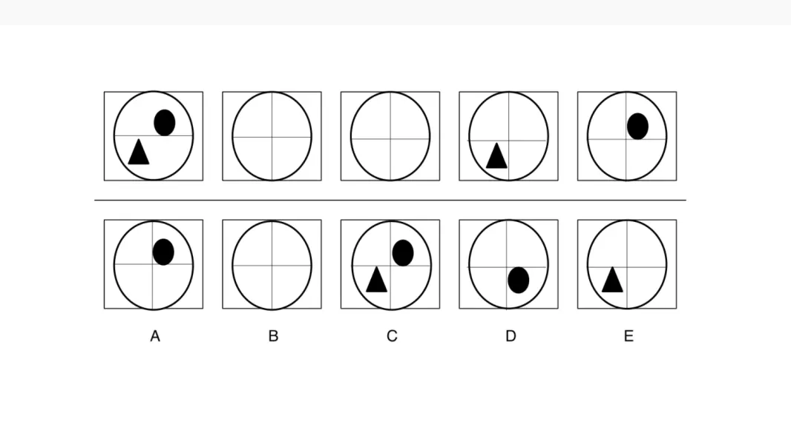
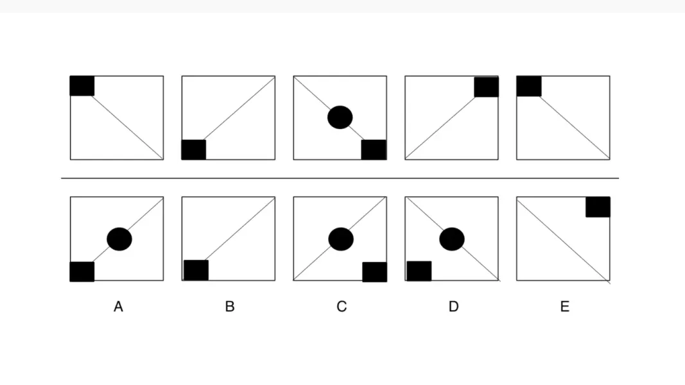

What is an abstract reasoning test?
An abstract reasoning test is an assessment that uses shapes and patterns to assess your problem-solving skills and ability to spot logical series. For example, you might need to select which image completes a sequence, is missing
from the overall picture, or doesn’t correlate to the other images shown.
The answers on an abstract reasoning test are usually multiple-choice, but don’t be fooled into thinking this makes the process easier — you need to work quickly and accurately to identify the rule governing the pattern and complete
all of the questions on the test.
And to make things even more challenging, you will normally have a minute or less to answer each question.
Abstract reasoning tests are common for research, software development and engineering roles.
Why do employers use abstract tests?
An abstract reasoning test signifies to an employer which candidates have the lateral thinking, problem solving and strategic thinking skills that are valuable in the workplace.
Most commonly it’s used in industries such as technology and engineering, as it helps give employers a better understanding of which candidates have the sharp minds and critical thinking skills needed to succeed in such fields.
Aptitude tests help exceptional candidates to stand out, and busy employers to quickly differentiate between applicants. This is why it’s so important to ensure you make time to practice tests and prepare if you’re about to take an
abstract reasoning assessment — it will help you hone your skills and stand out against the competition.
Free example abstract reasoning questions
Familiarising yourself with the type of questions you’ll find on the abstract reasoning test is an essential part of the preparation process — it will help you improve your speed, accuracy and confidence.
Below are three sample questions to give you an idea of how an abstract reasoning question works; have a go and see how you get on. Answers with workings are below the questions.
Question 1 Which of the boxes comes next in the sequence?

Question 2 Which shape follows in the sequence?

Question 3 Which box follows the sequence?

Answers
Question 1: Circle, maintains same position in top right segment for one turn, and then is not present for the following three turns. Triangle, maintains same position in bottom left segment for one turn, and then
is not present for the following two turns. So the correct answer is B).
Question 2: Diagonal line changes direction from top left corner to bottom right corner, then from top right corner to bottom left corner with each turn. Square moves around corner of the frame in an anti-clockwise
direction with each turn. Circle appears on diagonal line in every third frame with each turn. So the correct answer is A).
Question 3: ’U’ shape rotates by 90 degrees with each turn. Circle changes position in the ’U’ shape as it appears in each segment with each turn. Triangle appears in same position within the ‘U’ shape on each alternate
turn. So the correct answer is D).